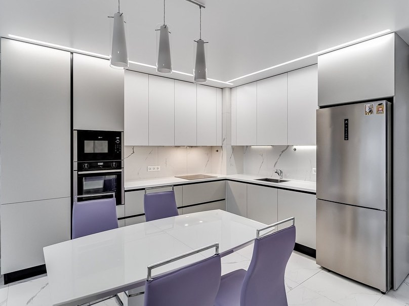

Кухня для небольшой квартиры
Задача: сохранить ощущение пространства и уместить технику с хранением.
Решение: светлая композиция, продуманная эргономика и мебель под размеры помещения.
Кухни, шкафы и шкафы-купе по индивидуальным размерам
Делаем кухни, шкафы и встроенные решения под ниши, короба, технику и сложные планировки. Помогаем использовать пространство с пользой и без типовых ограничений.

Быстрый ориентир
Наши выполненные работы
В этом варианте лендинга работы и доверие стоят выше по странице, чтобы посетитель быстрее увидел уровень и тип проектов.
Задача: сохранить ощущение пространства и уместить технику с хранением.
Решение: светлая композиция, продуманная эргономика и мебель под размеры помещения.

Задача: встроить вместительный шкаф без потери полезной площади.
Решение: проект по точным размерам ниши с удобным внутренним наполнением.

Задача: сделать аккуратную и удобную систему хранения на небольшой площади.
Решение: закрытые фасады, компактная конфигурация и визуально легкое решение.
Быстрый старт
Эта форма расположена выше по странице, чтобы человек мог обратиться сразу после первого доверия и примеров работ.
Какие задачи решаем
Когда важно уместить больше хранения, техники и рабочей поверхности без перегруза пространства.
Когда есть короба, трубы, углы, выступы или ниши, которые нужно аккуратно встроить в проект.
Когда нужно сделать встроенное хранение без зазоров и потери полезного места.
Когда важно использовать высоту помещения и получить максимум вместимости.
Что изготавливаем
Под размеры помещения, технику, сценарии готовки и хранения.
Под спальню, прихожую, нишу, коридор или отдельную зону хранения.
Компактные решения, которые помогают держать порядок и не перегружать входную зону.
Проекты под сложную геометрию помещения и нестандартные размеры.
Как проходит работа
Вы оставляете заявку или отправляете размеры и фото помещения.
Обсуждаем задачу, тип мебели и ориентируем по возможному решению.
Фиксируем реальные особенности помещения: стены, ниши, технику и выступы.
Согласовываем материалы, фасады, наполнение и итоговую конфигурацию.
После согласования проект запускается в работу.
Доставка, установка и итоговая проверка результата на месте.
Материалы и варианты
Подбираются под стиль помещения, освещение и желаемый визуальный эффект.
Внутреннее устройство мебели продумывается под реальные вещи и ежедневные сценарии использования.
Ищем конфигурацию, где удобно пользоваться мебелью и комфортно входить в бюджет.
Отзывы
«У нас была небольшая кухня и нестандартная стена. Всё продумали так, что пользоваться удобно каждый день.»
«Шкаф сделали под нишу очень аккуратно. Было важно не терять место, и с этим отлично справились.»
«Понравилось, что на каждом этапе было понятно, что происходит дальше. Без лишней суеты и непонятных обещаний.»
FAQ
Да, именно поэтому в этом варианте лендинга форма стоит выше. Можно начать с предварительного расчета, а затем перейти к следующему шагу.
Да, проект строится под особенности помещения: ниши, выступы, трубы, технику и нестандартные углы.
Да, на сайте сделан акцент не только на кухнях, но и на шкафах, шкафах-купе, прихожих и встроенных решениях.
Можно оставить форму на сайте, позвонить по номеру 8-904-100-88-78 или написать на email meb-eko@mail.ru.
Нужен расчет?
Подходит для кухни, шкафа, шкафа-купе, прихожей и других решений по индивидуальным размерам.